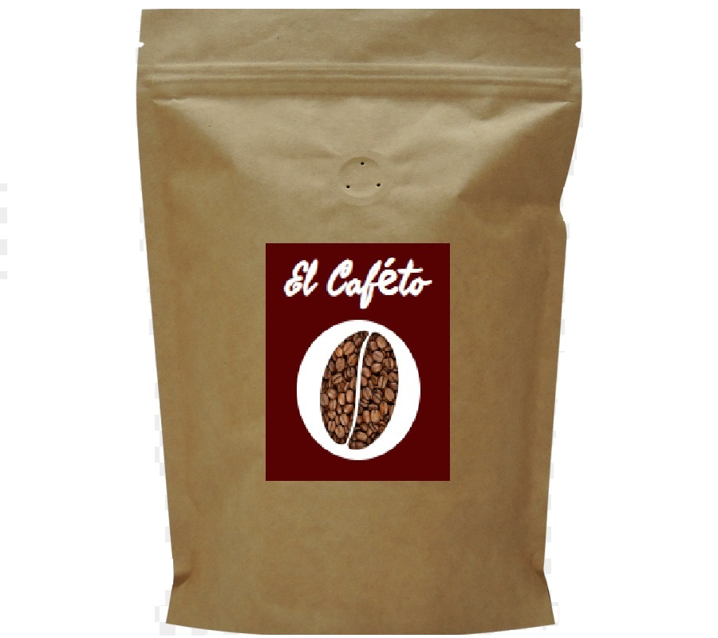

Proceso del producto:
Plantacion:
Es la primera etapa y más importante para producir café, ya que marca el inicio del ciclo que va de la siembra de la semilla hasta el crecimiento de la planta. Se puede realizar la plantación al sol o a la sombra, en función de las necesidades. Una vez plantado el cafeto, deberemos esperar entre 3 y 4 años para producir la primera cosecha. Posteriormente, cada planta vivirá aproximadamente 20 años.

Cosecha:
- La cosecha del se produce de forma anual cuando las cerezas del café alcanzan la maduración. Existen dos formas métodos para realizarla:
- Picking: es el proceso que se efectúa de forma manual y en plena fase de madurez, dejando aquellas plantas que aún se encuentran verdes.
- Stripping: es el proceso que se efectúa de forma industrial, es decir, mecánica. En este caso, las bayas que se recogen presentan diferentes grados de maduración, por lo que se deberá efectuar una revisión posterior de aquellas que no han alcanzado la madurez.

Despulpado o procesamiento:
Una vez terminada la cosecha, se secan los granos mediante una técnica húmeda o seca, en función del gusto que queramos obtener. Posteriormente, se eliminan todos los residuos y se procede a quitar las capas que en vuelven los granos de café, para obtener el café limpio o verde. Una vez finalizado el proceso, se clasifica el producto obtenido mediante diferentes criterios.

Tueste:
En esta fase, el producto adquiere el sabor y aroma por la que reconocemos nuestra taza de café, mediante el procesamiento del grano en hornos. Gracias a ello, se consigue aumentar el tamaño del mismo, reducir su cafeína, perder la humedad y adquirir el color tostado típico que caracteriza el café.

Envase y comercialización
Llegamos a la última etapa de la producción del café. Si se trata de café instantaneo o de filtro, se puede comercializar directamente mediante una previa actuación del molinillo. Usualmente, esta etapa se realiza en el país de consumo del café, mediante un envase previo al vacío.
